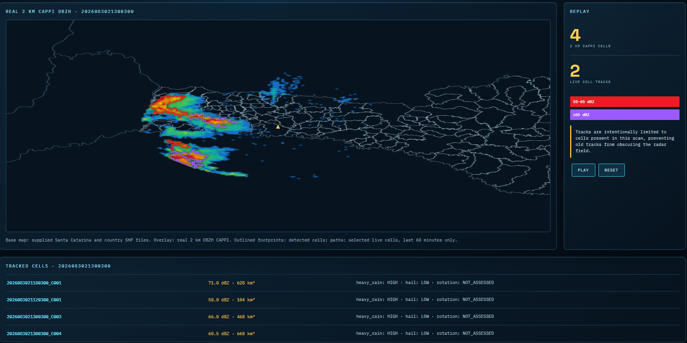
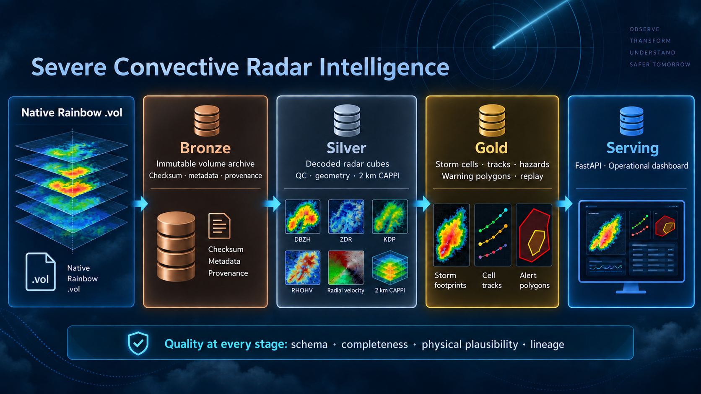

Bronze
Original volume files, checksums and provenance.
Severe Convective Radar Intelligence turns archived radar volumes into inspectable storm cells, trajectories and evidence—with data quality at every step.
Actual dashboard captures from the archive. Switch between two moments to explore the evolving reflectivity field and cell trajectories.

Two real screenshots, not a hosted live radar feed. The full archive replay runs in the project application.
25 real scans from 21:00 to 23:54 UTC, 30 August 2026. This 1.5× video export retains observation timestamps, cell footprints and recent tracks.
1080p · approximately 35 seconds · archived observations. Available scans are shown in sequence; no synthetic intermediate observations.
Download radar replay MP4 ↓Cell outlines and trajectories use peak reflectivity. The dashboard legend shows only classes present among detected cells; weaker echoes stay visible.
Raw observations remain recoverable as they become multidimensional arrays, atmospheric slices, storm objects and serving products.

Original volume files, checksums and provenance.
Decoded sweep-aware Zarr data and quality checks.
Coverage-aware CAPPI, cell footprints and tracks.
FastAPI and an interactive React archive replay.
Architecture illustration is conceptual. CAPPI products are stored in Gold in the implementation.
Sixteen timestamp groups were excluded from the recorded processing run. Keeping those gaps visible is part of an honest result.
Inspect the validation code ↗Native files and SHA-256 manifests support reproducible processing.
Metadata, dimensions, geometry and physical plausibility matter alongside schema checks.
Coverage masks keep unsupported CAPPI regions explicit. Processing counts do not measure detection accuracy.
Connected pixels ≥40 dBZ on the 2 km CAPPI; minimum cell area of 16 km².
Hungarian matching with speed ≤150 km/h and peak-reflectivity change ≤25 dBZ.
Active cell boundaries and up to 12 recent trajectory points, synchronized to the selected scan.
Reflectivity classes describe radar intensity. Heavy-rain and hail outputs are heuristic potential indicators; rotation is not assessed. Independent event verification, improved projection and split/merge tracking remain development priorities. This project does not issue official warnings.